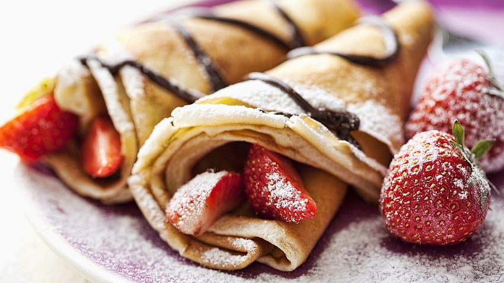

Back to Recipes
Crepes
Ingredients:
- 2 eggs
- 2 cups of flour
- 2 glasses of milk
- 1 teaspoon of salt
- butter or oil
Instructions:
- To prepare the pancake recipe, mix the flour, milk and water thoroughly until there are no lumps. Add the eggs and beat some more. Dough to a more runny consistency than cake batter.
- Put 1 teaspoon of butter or oil in a Teflon pan and spread it with a brush. Pour 1 ladle of pancake batter into the hot pan, and spread it by tilting it left and right.
- Turn both sides and cook over medium heat until lightly browned. Continue this process until all your mortar is used up. Our pancake recipe is ready, bon appetit.